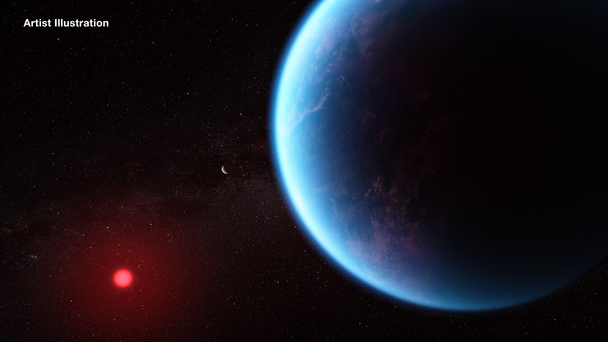

The Origins
As detailed in A Swing, Rheasilvia began as a Comet fired from a Numitaeran civilization. Clearly, Rheasilvia didn't make it to its destination, but instead landed in the ice of Fearun. Terramancers had specifically designed Rheasilvia for a much warmer climate, so landing in the ice posed a number of disadvantages.
With a stroke of good fortune, Rheasilvia was "shipped" with some of the best Terramancers the planes had ever known. The city was destined to become a massive trading hub and forward operating base for the Numitaeran fleet. While Rheasilvia was misplaced, it was still fully functional.
Landing in the ice provided a hugh benefit to Silvians. Because the ice was effectively impenetrable, Rheasilvia had millenia to grow uninhibited. When the city finally opened for commerce between itself and the rest of Faerun, it was immediately situated in the top cities on the planet, both economically and academically.
Because Rheasilvia was originally engineered for a much warmer climate, the interior is in stark contrast to the ice around it. Most of Rheasilvia is garden.